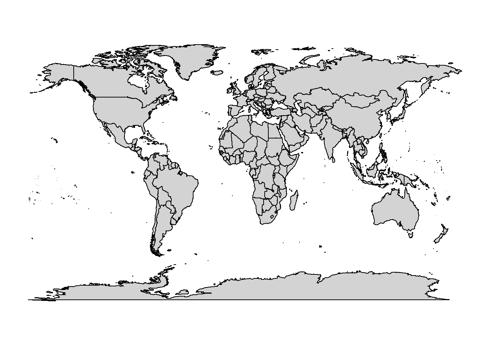
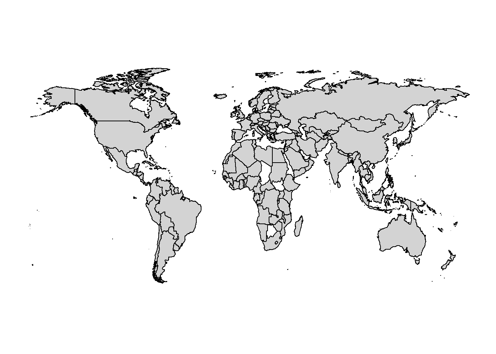
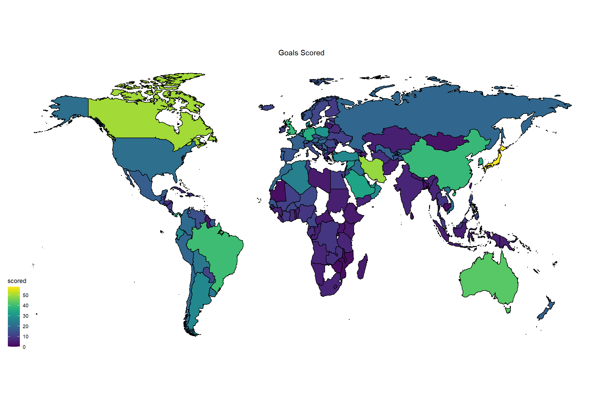
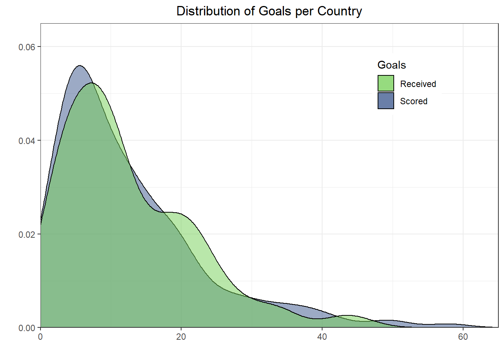
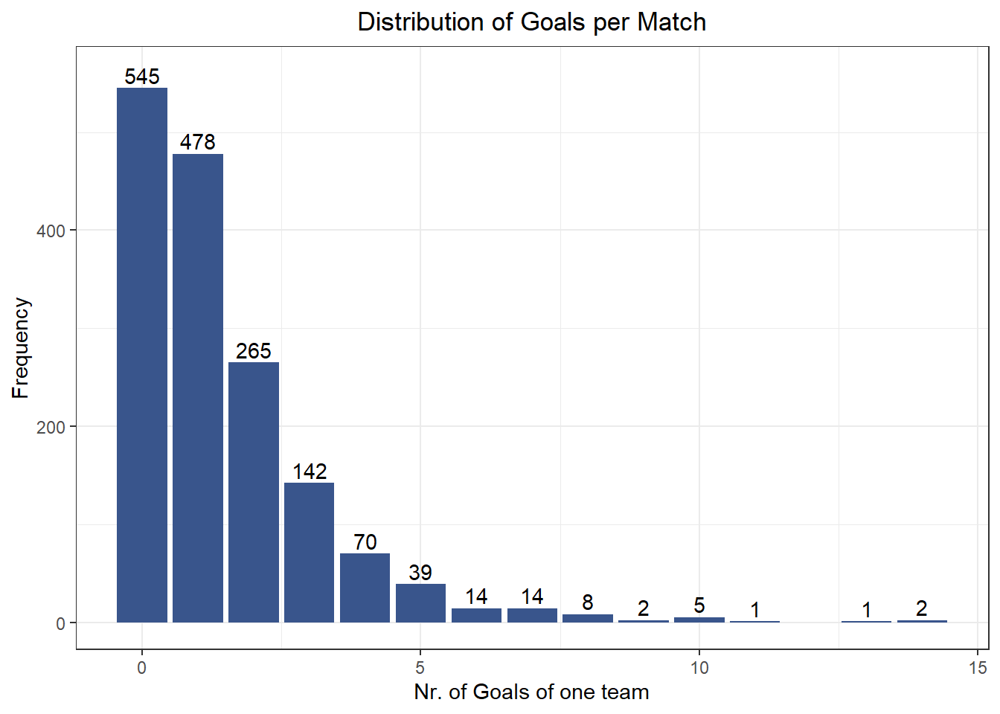

With this series of blog posts, I wanted to learn more about Python, plotting maps with ggplot, modeling with STAN, football (?) and just practice writing. The aim is to predict the games of the 2022 football world championship using data from the qualifying games of all countries and informations about the individual players of each team. I scraped the data from open websites using Python. The scripts can be found on the corresponding Github page of this project. In this first blog post of the series, I want to explore the data set results_quali_matches.csv which contains the data of all qualifying games. I never used spatial data or plotted spatial data, so since I have data from all over the world, I want to try out plotting maps with ggplot. The main point of this blog post, however, is to get a feel for the data we have, which will be useful for our modeling attempts later.
Exploring the goals around the world.
I start by loading the packages I need, set a general theme for our plots, and then load our data.
In total we have 796 matches in our data set. Lets also check how many different countries we have:
Code
countries <- quali22$teamA %>%unique() length(countries)
[1] 183
Exploring the goals around the world.
Lets start by calculating and plotting the number of goals scored and received by each country. Our data.frame generally looks like this:
Code
head(quali22)
# A tibble: 6 x 5
teamA teamB goalsA goalsB region
<chr> <chr> <dbl> <dbl> <chr>
1 Niger Burkina Faso 0 2 Africa
2 Algerien Djibouti 8 0 Africa
3 Djibouti Niger 2 4 Africa
4 Burkina Faso Algerien 1 1 Africa
5 Algerien Niger 6 1 Africa
6 Djibouti Burkina Faso 0 4 Africa
I first want to create two new variables scored and received using a for-loop. There might be a “tidyverse” way to do this faster, however, I think the for-loop is pretty straight forward.
Code
n_countries <-length(countries)scored <-vector("numeric",n_countries)received <-vector("numeric",n_countries)for(i in1:length(countries)){ country <- countries[i] rows <- quali22 %>%filter(teamA == country | teamB == country) temp <- rows %>%mutate(scored =case_when( teamA == country ~ goalsA, teamB == country ~ goalsB),received =case_when( teamA == country ~ goalsB, teamB == country ~ goalsA)) %>%summarize(scored =sum(scored,na.rm=TRUE),received =sum(received,na.rm=TRUE)) scored[i] <- temp$scored received[i] <- temp$received}
# A tibble: 183 x 3
country scored received
<chr> <dbl> <dbl>
1 Japan 58 6
2 Kanada 50 8
3 Iran 49 8
4 Australien 43 11
5 Brasilien 40 5
6 China 39 22
7 England 39 3
8 Panama 36 20
9 Deutschland 36 4
10 Südkorea 35 4
# ... with 173 more rows
Making world maps using the ggplot2
Now I want to make a world map and then color each country by the number of goals scored/received. For this I will use the map package, which provides a data.frame that contains outlines of several continents.
Code
world <-map_data("world")head(world)
long lat group order region subregion
1 -69.89912 12.45200 1 1 Aruba <NA>
2 -69.89571 12.42300 1 2 Aruba <NA>
3 -69.94219 12.43853 1 3 Aruba <NA>
4 -70.00415 12.50049 1 4 Aruba <NA>
5 -70.06612 12.54697 1 5 Aruba <NA>
6 -70.05088 12.59707 1 6 Aruba <NA>
This world data.frame has the following variables: long for longitude, lat for latitude, group tells which adjacent points to connect, order refers to the sequence by which the points should be connected, and region and subregion annotate the area surrounded by a set of points. We can use this information to plot the world using ggplot:
Code
ggplot(data = world, aes(x=long, y = lat, group = group)) +geom_polygon(color="black",fill="lightgrey") +coord_fixed(1.3) +theme_map() # looks better

Beautiful, isn’t it ? In order to color each country by the number of goals scored or received, we have to join the world and the country_stats data.frames together. However, before we can do this, we first have to make some processing steps in both data.frames. First, I need to translate the country names in the country_stats data.frames from German to English, since the region column in world contains the Names in English. Second, in the country_stats data.frame I have some “countries” which are rather sub-regions in world, for instance, Wales or Scotland. Thus, I need to create a new column in world which contains the same “countries” as in country_stats.
To translate the names, I use the countrycode package.
# A tibble: 6 x 4
country scored received country_en
<chr> <dbl> <dbl> <chr>
1 Japan 58 6 Japan
2 Kanada 50 8 Canada
3 Iran 49 8 Iran
4 Australien 43 11 Australia
5 Brasilien 40 5 Brazil
6 China 39 22 China
This worked quite well, except for the following warning: Some values were not matched unambiguously: Br. Jungferninseln, Djibouti, Dom. Republik, England,Kapverdische Inseln, Schottland, Sénégal, VA Emirate, Wales, Zentralafr. Republik. So I still have to put in some work by myself. I also added additional country name changes, based on checks a few code chunks further down.
Code
country_stats <- country_stats %>%mutate(country_en =case_when( country =="Djibouti"~"Djibouti", # not sure why this didnt work before country =="Br. Jungferninseln"~"Virgin Islands", country =="Dom. Republik"~"Dominican Republic", country =="England"~"Great Britain", country =="Kapverdische Inseln"~"Cape Verde", country =="Schottland"~"Scotland", country =="Sénégal"~"Senegal", country =="Wales"~"Wales", country =="Zentralafr. Republik"~"Central African Republic", country =="Bosnien-Herzegowina"~"Bosnia and Herzegovina", country =="Elfenbeinküste"~"Ivory Coast", country =="Tschechien"~"Czech Republic", country =="Curaçao"~"Curacao", country =="Kongo"~"Republic of Congo", country =="USA"~"USA", country =="DR Kongo"~"Democratic Republic of the Congo", country =="St. Kitts & Nevis"~"Nevis", country =="Antigua & Barbuda"~"Antigua", country =="Turks & Caicos"~"Turks and Caicos Islands", country =="Trinidad & Tobago"~"Trinidad", country =="St. Vincent/Grenadines"~"Saint Vincent", country =="VA Emirate"~"United Arab Emirates", country =="Hong Kong SAR China"~"Hongkong", country =="Palästina"~"Palestine", country =="Myanmar"~"Myanmar", country =="Nordirland"~"Northern Ireland",TRUE~ country_en )) # check if we have everything:# country_stats %>% filter(is.na(country_en))country_stats %>%head()
# A tibble: 6 x 4
country scored received country_en
<chr> <dbl> <dbl> <chr>
1 Japan 58 6 Japan
2 Kanada 50 8 Canada
3 Iran 49 8 Iran
4 Australien 43 11 Australia
5 Brasilien 40 5 Brazil
6 China 39 22 China
Next I make a new variable in the worlds data.frame, which I will then use to join both data.frames together.
Code
world <- world %>%mutate(country_en =case_when(subregion =="Wales"~"Wales", subregion =="Northern Ireland"~"Northern Ireland", subregion =="Scotland"~"Scotland", subregion =="Great Britain"~"Great Britain", subregion =="Grand Caicos Island"~"Turks and Caicos Islands", subregion =="British"~"Virgin Islands", subregion =="Hong Kong"~"Hong Kong",TRUE~ region)) %>%filter(region !="USA"| region =="USA"& (is.na(subregion) | subregion =="Alaska"), region !="United Arab Emirates"| region =="United Arab Emirates"&is.na(subregion), region !="Myanmar"| region =="Myanmar"&is.na(subregion), region !="Ireland"| region =="Ireland"&is.na(subregion))# We need to add Gibraltar through a different dataset# "worldHires" is a more detailed version of "world"temp <-map_data('worldHires') %>%filter(subregion =="Gibralter") %>%mutate(country_en ="Gibraltar")world <-bind_rows(world,temp) %>%as_tibble()
Now we can join both data.frames using left_join. Lets also clean the resulting data.frame a little bit.
Code
country_stats <-left_join(country_stats,world,by="country_en") %>%select(region = country_en, scored, received, long, lat, group, order )# checks:# check if any countries do not have infos from world# country_stats %>% filter(is.na(long)) %>% pull(region) %>% unique()
Great, after some back and forth changes, I think I now have the position of every country in our data set. Lets check this, by just plotting all countries or regions where we have some data from.
Code
ggplot(data = country_stats, aes(x=long, y = lat, group = group)) +geom_polygon(color="black",fill="lightgrey") +coord_fixed(1.3) +theme_map()

So we this really is a “World” championship.
Color regions by goals scored and recevied
Here I color each country or region by the number of goals they scored and received in their qualifying matches. From the plots you can identify some countries which apparently did well in their group, since the score many goals, but received only few. For instance, Canada, Japan, German, or Brasil. There also seem to be fewer goals in African and south-east Asian countries.
Code
ggplot(data = country_stats, aes(x=long, y = lat, group = group)) +geom_polygon(aes(fill=scored), color="black",size =0.5) +scale_fill_viridis() +coord_fixed(1.3) +labs(title ="Goals Scored") +theme_map() +theme(plot.title =element_text(hjust =0.5))

Code
ggplot(data = country_stats, aes(x=long, y = lat, group = group)) +geom_polygon(aes(fill=received), color="black",size =0.5) +scale_fill_viridis() +coord_fixed(1.3) +labs(title ="Goals Received") +theme_map() +theme(plot.title =element_text(hjust =0.5))
I also want to get a general idea of the distribution and relationship of the scored and received goals. There is only a small negative correlation between the number of goals scored and the number of goals received (r = -0.16), mostly driven by Japan.
On average, countries scored/received 12.43 goals (SD = 10.53). Lets also look at the distributions:
Code
ggplot(temp) +geom_density(aes(x = scored, fill ="Scored"), alpha =0.5) +geom_density(aes(x = received, fill ="Received"), alpha =0.5) +scale_fill_manual(values =c("#74D055FF","#39558CFF")) +labs(fill ="Goals",x ="", y="", title ="Distribution of Goals per Country") +theme(legend.position =c(0.8, 0.8)) +scale_x_continuous(expand =c(0, 0), limits =c(0, 65)) +scale_y_continuous(expand =c(0, 0), limits =c(0, 0.065))

Goals Scored and Received per match
I am also interested in the single match-ups, for instance, how many goals are there in the average match, what are the most probably outcomes of a match, etc. Lets try to find this out. On average, there were 1.43 goals per game (SD = 1.72). The distribution of goals looks as follows:
Code
data.frame(goals =c(quali22$goalsA,quali22$goalsB)) %>%count(goals,sort=T) %>%na.omit() %>%ggplot(aes(x = goals,y = n)) +geom_col(fill="#39558CFF") +geom_text(aes(label = n), vjust =-0.3) +ylim(0,560) +labs(x ="Nr. of Goals of one team", y="Frequency", title ="Distribution of Goals per Match")

The most common number of goals a team scores is 0 (sad). Now lets look at the results of the matches. I don’t really care if the match was 1:0 or 0:1, so I will treat both outcomes as the same. I will first recode the individual goals of team A and B into a match results variable result, which I can then use to count and plot the different results.
Not suprising, results of 1:0, 2:0, or 1:1 are the most common outcomes. Just out of curioisity, lets check the high scoring games:
Code
quali22 %>%filter(goalsA >=10| goalsB >=10)
# A tibble: 9 x 5
teamA teamB goalsA goalsB region
<chr> <chr> <dbl> <dbl> <chr>
1 Iran Kambodscha 14 0 Asia
2 Kambodscha Iran 0 10 Asia
3 Japan Mongolei 14 0 Asia
4 Japan Myanmar 10 0 Asia
5 Kaimaninseln Kanada 0 11 CONCACAF
6 Guatemala St. Vincent/Grenadines 10 0 CONCACAF
7 Anguilla Panama 0 13 CONCACAF
8 Turks & Caicos Haiti 0 10 CONCACAF
9 San Marino England 0 10 Europe